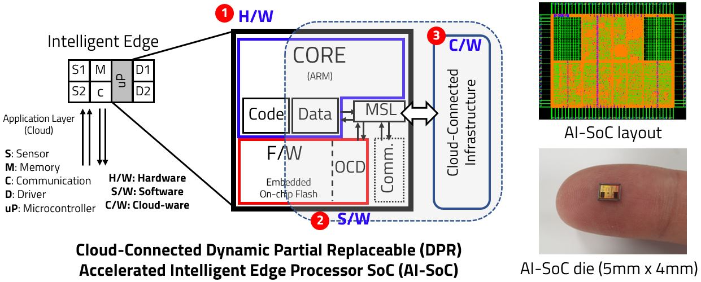

Accelerated Intelligent System-Software-on-Chip Lab
Welcome to Accelerated Intelligent System-Software-on-Chip (AI-SoC) Lab. Our research group focuses on the following architecture to realize the accelerated intelligence in systems-software-on-chip by dynamic partial replacement of on-chip hardware and embedded software.
|  |
News
2020-05 PhD student Mr. Kang's paper was accepted to IEEE ICCE-TW 2020 as regular oral paper.
2020-04 PhD student Mr. Kwon's paper was accepted to IEEE COOLChips 2020 as regular oral paper.
2020-03 Post-Doc. collaborator Dr. Moon's paper was accepted to ACM SIGSIM PADS 2020 as regular oral paper.
2019-02 Our research received a regular grant from KOFAC, DHS, Intelligent Automotive Control by SW-HW Dynamic Partial Replacement, 2020, KOFAC
2019-11 Post-Doc. collaborator Dr. Moon's paper was accepted to IEEE ACCESS journal.
2019-03 Our research received a regular grant from NRF, Lightweighted Intelligent System/Software-on-Chip/Cloud Platform, 2019-2022
Recent Publications
User Insensible Sliding Firmware Update Technique for Flash-Area/Time-Cost Reduction toward Low-Power Embedded Software Replacement, J. S. Kwon and D. J. Park*, IEEE COOLChips 2020
Runtime Abstraction-level Conversion for Steady-state Simulation Speedup of Semiconductor Manufacturing System, M. G. Seok, D. J. Park*, ACM SIGSIM PADS 2020
Fast and Cycle-Accurate Simulation of RTL NoC Designs using Test-driven Cellular Automata, M. G. Seok, D. J. Park*, IEEE Access, 2019
Robust On-Chip Processing Unit with Parallelized ECC Block for Lightweight Instruction Execution, M. J. Kang, D. J. Park*, IEEE ICCE-TW 2020
Scrambling Technique of Instruction Power Consumption for Side-Channel Attack Protection, D. K. Lee, D. J. Park*, International Conference on Electronics, Information, and Communication (ICEIC) 2020
Sponsored Research Grants
Our research group has been sponsored from the national research fund (NRF), research institutes and various industrial companies. Welcome to contact us about the technology transfer, technical consulting, and discussion for future collaboration.
Lightweighted Intelligent System/Software-on-Chip/Cloud Platform, 2019-2022, NRF
Self-Organized Community Computing Platform for Resilent Environment, 2018-2021, NRF
Intelligent Automotive Control by SW-HW Dynamic Partial Replacement, 2020, KOFAC, DHS